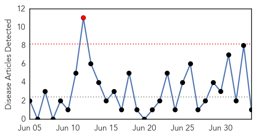
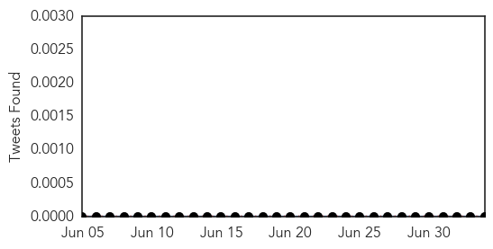
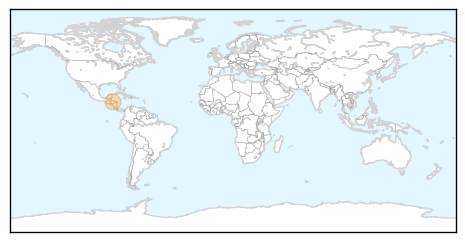
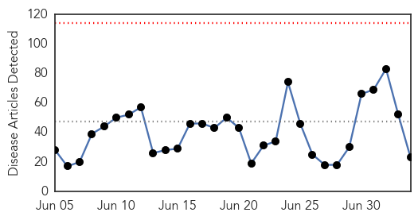
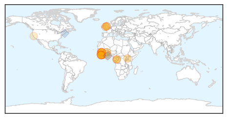
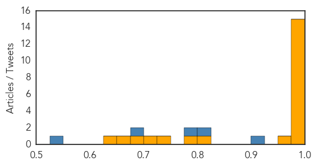

West Nile Virus
30-Day Web Trend
1 alerts, 0 warnings

30-Day Twitter Trend
3 alerts, 0 warnings

Article Locations
Article Confidences

Top Articles:
Top Tweets:
-
No tweets found for Jul 04, 2015
Ebola
30-Day Web Trend
0 alerts, 0 warnings

30-Day Twitter Trend
1 alerts, 0 warnings

Article Locations
Article Confidences
Top Articles:
- 1.000
- Persistence of Ebola epidemic exposes global health failure
- 1.000
- Liberia Works to Contain Ebola, Find Source of New Cases
- 1.000
- Two More Cases Confirmed In New Outbreak; Authorities Investigate Animal Link
- 1.000
- Villagers eating dog meat has caused Ebola to resurface in Liberia
- 1.000
- Eating ‘Dog Meat’ Gave Rise To Ebola Bouncing Back In Liberia
- 1.000
- Dangerous practices spread Ebola in Sierra Leone
- 0.999
- Suspected Congo Ebola victims test negative for the virus
- 0.998
- World Food Programme Responding to the Ebola Outbreak in Sierra Leone - Update as of 26/06/2015 - Sierra Leone
- 0.996
- Man in Llandudno suspected of having Ebola tests negative for the deadly virus
- 0.995
- World’s media have moved on but Ebola still wreaking havoc
- 0.993
- Liberia: 200 Reportedly Had Contact With Ebola Victim
- 0.991
- Congo and WHO Investigate Possible Ebola Outbreak
- 0.991
- Ebola reappears in Liberia seven days after WHO declares it disease free
- 0.989
- Ebola vaccine trial is not dangerous Prof Binka
- 0.978
- - BREAKING: Man taken ill in Llandudno being tested for Ebola
- 0.975
- North Wales man rushed to hospital amid fears he had Ebola tests negative for the deadly disease
- 0.808
- Is there any benefit in overreacting to threats like Ebola? « The Berkeley Blog
- 0.783
- Ebola, Security, and Governance in West Africa: Why a Limited Problem Needs a Global Response
- 0.731
- ‘The gods are not to blame’ – Klefe natives told
- 0.712
- Ebola army medics back at home
- 0.681
- Korle-Bu has no Ebola case
- 0.657
- UK troops make significant contribution to Ebola fight
- 0.634
- Readers Respond to "Electric Cures"
Top Tweets:
- 0.982
- Suspected Congo Ebola victims test negative for the virus - Reuters http://t.co/wpG80p2gLD ebola EVD
- 0.938
- Suspected Llandudno Ebola patient is 'very unlikely' to have the disease ... - Daily Post North Wales http://t.co/g5OImTea9K ebola EVD
- 0.899
- Read more on how Ebola outbreak resulted in ↑ untreated malaria cases in West Africa http://t.co/cGxTlL9DhC http://t.co/cbQythV96T
- 0.875
- Sure, but proper use of PPE during SARS stopped that outbreak. MERS is not Ebola. https://t.co/8g9IevDA1x
- 0.842
- Suspected Congo Ebola victims test negative for the virus - Reuters http://t.co/TNYlVMIKy1
- 0.790
- Ebola nous concerne tous. L’épidémie en Afrique de l’Ouest sera déclarée terminée quand plus aucun nouveau cas ne sera recensé.
- 0.732
- Congo and WHO investigate possible Ebola outbreak:... http://t.co/O7JaTNPTRC
- 0.618
- 3 July - news pouch on avianflu avianinfluenza Ebola EbolaResponse MERS is here: http://t.co/kFJxyWn1rV
- 0.567
- Building a better Ebola suit - http://t.co/VPtj5NZzEU http://t.co/8wpidBZFA9 ebola EVD